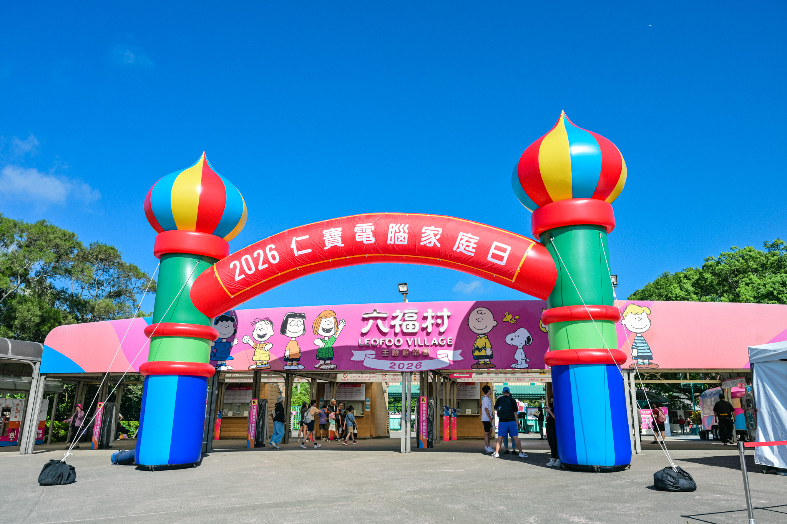

家庭日結束後，大家記得的可能是六福村的遊樂設施、排隊的棉花糖，或是盛夏午後明亮而熱鬧的場景。
應該很少有人回家後，特別回味那趟「交通車」。
交通車不像舞台、表演或禮物，會成為活動的亮點。但在所有人抵達目的地、正式展開行程以前，它其實早已悄悄串起一千多位同仁與眷友，成為這場家庭日的第一站。
手舉牌後面，是一位默默付出的人
家庭日當天，大家在集合地點尋找的，是寫著車號的手舉牌。但那塊牌子真正代表的，其實不是一個車號，而是：「有一個人正在這裡等你。」
今年共有 28 位同仁擔任車長。他們提早抵達現場、舉起牌子、協助確認人員，在其他人準備放鬆度過家庭日時，仍然替一整車的人留意時間與現場狀況。
車長不是一個華麗的角色。他們不會出現在舞台中央，也很少因為順利完成任務而獲得掌聲。更多時候，他們只是回答一個又一個問題，尋找還沒出現的人，或是在計畫與現場對不上時，成為大家第一個詢問的對象。
也正因為有人站在那裡，原本互不相識的一群人，才能在短時間內成為「同一車的人」，一起出發，再一起回家。
計畫之外，總要有人接住
除了車長，家庭日的當天交通車也仰賴福委與總務夥伴的協助。
不同集合地點有各自的環境與限制，需要熟悉現場的夥伴協助確認。活動當天，也需要有人引導、聯繫及回應臨時狀況。這些工作往往不容易被參加者看見，卻會直接影響一整群人能不能順利移動。
許多時候，真正讓活動得以繼續運作的，並不是計畫書裡已經寫好的內容，而是有人看見現場多了一個問題，便願意向前一步，把那個位置補起來。
幕後故事，也包括不如預期的時刻
當然，這次的交通安排並不是每一個環節都如預期順利。
回程延續上一屆六福村家庭日「人滿發車」的方式，但由於這次參與人數不同，部分同仁等待了較長時間。這也提醒我們，過去成功的經驗可以作為參考，卻不能直接複製到每一次活動裡。
對活動統籌團隊而言，幕後故事不只是「我們完成了什麼」，也包括哪些地方沒有想得足夠周全，以及下一次可以如何做得更好。
一場活動，是被許多人一起托住的
一場大型活動很容易讓人看見成果，卻不容易讓人看見成果是如何被完成的。
當遊覽車載著大家離開集合地點，我們看見的只是一個短短的畫面。但那個畫面背後，其實站著許多曾經回覆訊息、確認安排、提供建議，也願意在活動當天多承擔一些的人。
謝謝 28 位車長，願意在大家享受家庭日的同時，替一車的人多留一份心。
謝謝福委與總務夥伴，在活動前後協助確認、溝通與支援。
謝謝每一位配合集合與引導，並願意向我們反映感受的同仁與眷屬。
一場活動的順利，從來不是理所當然；那些不夠順利的地方，也不會只是一次失誤，而會成為下一次調整的依據。
這就是家庭日交通車的幕後：有計畫、有變動，有許多人默默接住彼此，也有一群人帶著這次的經驗，繼續思考下一次如何做得更好。
 |